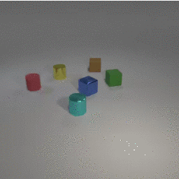
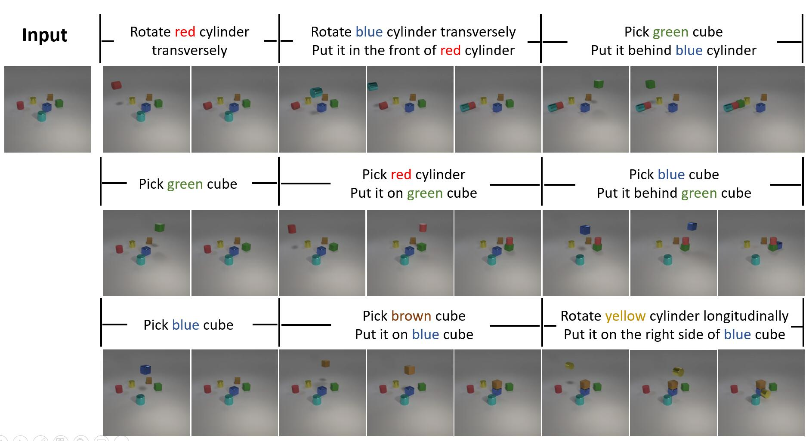
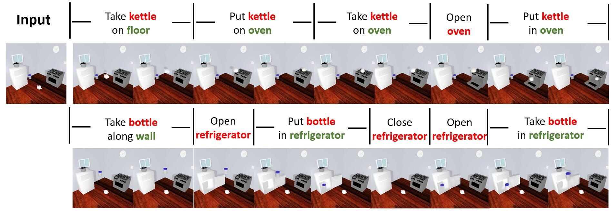

Action Concept Grounding Network for Semantically-Consistent Video Generation
Preprint. Under review.
Abstract
Recent works in video prediction have mainly focused on passive forecasting and low-level action-conditional prediction, which sidesteps the learning of interaction between agents and objects. We introduce the task of semantic action-conditional video prediction, which uses semantic action labels to describe those interactions and can be regarded as an inverse problem of action recognition. The challenge of this new task primarily lies in how to effectively inform the model of semantic action information. To bridge vision and language, we utilize the idea of capsule and propose a novel video prediction model, Modular Action CapsuleNetwork (MAC). Our method is evaluated on two newly designed synthetic datasets, CLEVR-Building-Blocks and Sapien-Kitchen, and one real-world dataset called TowerCreation. Experiments show that given different action labels, MAC can correctly condition on instructions and generate corresponding future frames without need of bounding boxes. We further demonstrate the trained model canmake out-of-distribution generalization, be quickly adapted to new object categories and exploit its learnt features for object detection, showing the progression towards higher-level cognitive abilities.
New task: Semantic Action-conditional Video Prediction

Our Solution: Modular Action Capsule Network (MAC)

Qualitative Results on CLEVR-Building-blocks

Ground truth Predictions

Ground truth Predictions
Qualitative Results on Sapien-Kitchen

Ground truth Predictions

Ground truth Predictions
Quantitative Comparison

Counterfactual Generations


Acknowledgements
To be added after review period.